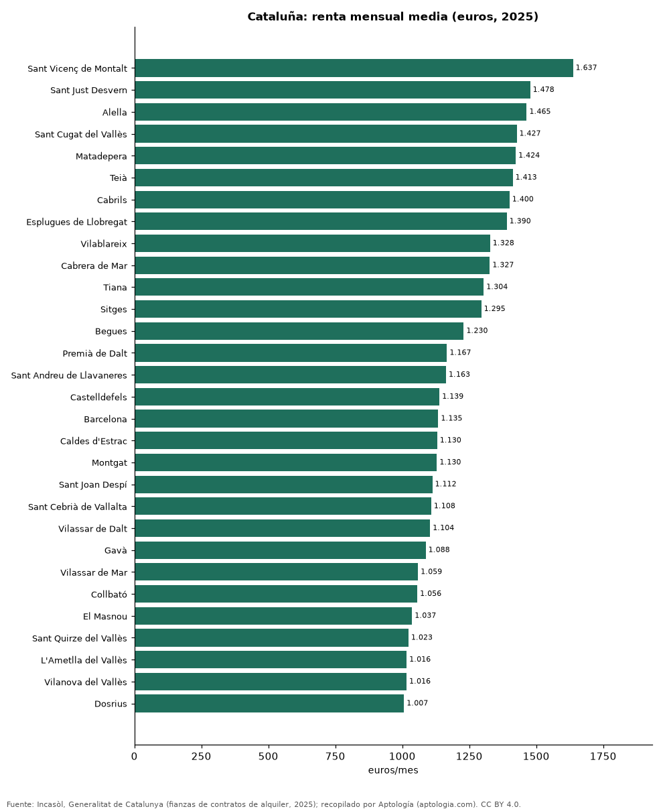

Alquiler por municipio en Cataluña: los más caros y los más baratos según los contratos de 2025
Estudio con datos abiertos (CC BY 4.0). Versión original: https://github.com/elbroker/aptologia-datos/tree/main/estudios/alquiler-por-municipio-cataluna-2025 · DOI: 10.5281/zenodo.23471337
La renta media de alquiler más alta de Cataluña en 2025 se pagó en Sant Vicenç de Montalt (Barcelona), con 1.637 euros al mes, y la más baja de los 289 municipios con 30 contratos o más en La Sénia (Tarragona), con 345 euros. En Barcelona, el municipio con más contratos (30.789), la renta media fue de 1.135 euros al mes.
Resumen: ordenamos 289 municipios de Cataluña con 30 contratos de alquiler o más registrados en 2025 (103.729 contratos).
Actualizado: 18 de octubre de 2026 (datos de contratos de 2025) · Próxima actualización: mensual.

Resumen
| Indicador | Valor |
|---|---|
| Más caro | Sant Vicenç de Montalt: 1.637 euros |
| Más barato | La Sénia: 345 euros |
| Barcelona | 1.135 euros |
| Municipios | 289 |
Los 40 municipios más caros
| Municipio | Provincia | Alquiler mensual (media) | Contratos |
|---|---|---|---|
| Sant Vicenç de Montalt | Barcelona | 1.637 euros | 79 |
| Sant Just Desvern | Barcelona | 1.478 euros | 299 |
| Alella | Barcelona | 1.465 euros | 94 |
| Sant Cugat del Vallès | Barcelona | 1.427 euros | 1.318 |
| Matadepera | Barcelona | 1.424 euros | 82 |
| Teià | Barcelona | 1.413 euros | 70 |
| Cabrils | Barcelona | 1.400 euros | 67 |
| Esplugues de Llobregat | Barcelona | 1.390 euros | 614 |
| Vilablareix | Girona | 1.328 euros | 42 |
| Cabrera de Mar | Barcelona | 1.327 euros | 78 |
| Tiana | Barcelona | 1.304 euros | 95 |
| Sitges | Barcelona | 1.295 euros | 554 |
| Begues | Barcelona | 1.230 euros | 75 |
| Premià de Dalt | Barcelona | 1.167 euros | 86 |
| Sant Andreu de Llavaneres | Barcelona | 1.163 euros | 173 |
| Castelldefels | Barcelona | 1.139 euros | 952 |
| Barcelona | Barcelona | 1.135 euros | 30.789 |
| Caldes d'Estrac | Barcelona | 1.130 euros | 41 |
| Montgat | Barcelona | 1.130 euros | 127 |
| Sant Joan Despí | Barcelona | 1.112 euros | 434 |
| Sant Cebrià de Vallalta | Barcelona | 1.108 euros | 34 |
| Vilassar de Dalt | Barcelona | 1.104 euros | 83 |
| Gavà | Barcelona | 1.088 euros | 458 |
| Vilassar de Mar | Barcelona | 1.059 euros | 319 |
| Collbató | Barcelona | 1.056 euros | 30 |
| El Masnou | Barcelona | 1.037 euros | 364 |
| Sant Quirze del Vallès | Barcelona | 1.023 euros | 156 |
| L'Ametlla del Vallès | Barcelona | 1.016 euros | 56 |
| Vilanova del Vallès | Barcelona | 1.016 euros | 38 |
| Dosrius | Barcelona | 1.007 euros | 49 |
| Lliçà de Vall | Barcelona | 999 euros | 31 |
| Santa Susanna | Barcelona | 980 euros | 42 |
| Badalona | Barcelona | 965 euros | 2.577 |
| Sant Climent de Llobregat | Barcelona | 954 euros | 49 |
| Viladecavalls | Barcelona | 950 euros | 41 |
| Sant Feliu de Llobregat | Barcelona | 946 euros | 481 |
| Sant Gregori | Girona | 945 euros | 33 |
| Sant Fost de Campsentelles | Barcelona | 943 euros | 46 |
| Cervelló | Barcelona | 941 euros | 64 |
| Quart | Girona | 940 euros | 32 |
Renta mensual media de los contratos de alquiler de vivienda registrados en 2025.
Los 15 municipios más baratos
| Municipio | Provincia | Alquiler mensual (media) | Contratos |
|---|---|---|---|
| La Sénia | Tarragona | 345 euros | 35 |
| Artesa de Segre | Lleida | 375 euros | 85 |
| Santa Bàrbara | Tarragona | 377 euros | 40 |
| Ulldecona | Tarragona | 378 euros | 52 |
| La Pobla de Segur | Lleida | 379 euros | 121 |
| Gandesa | Tarragona | 381 euros | 32 |
| Cardona | Barcelona | 397 euros | 62 |
| Ponts | Lleida | 398 euros | 37 |
| Tremp | Lleida | 412 euros | 119 |
| Solsona | Lleida | 412 euros | 178 |
| Cervera | Lleida | 412 euros | 137 |
| Móra d'Ebre | Tarragona | 415 euros | 89 |
| Badia del Vallès | Barcelona | 415 euros | 47 |
| Linyola | Lleida | 418 euros | 34 |
| Amposta | Tarragona | 424 euros | 250 |
Preguntas frecuentes
¿Cuál es el municipio con el alquiler más caro de Cataluña? Sant Vicenç de Montalt, con 1.637 euros al mes de renta media en 2025.
¿Cuánto cuesta alquilar en Barcelona? 1.135 euros al mes de renta media en los contratos de 2025.
Metodología
- Fuente: Incasòl, Generalitat de Catalunya (fianzas de contratos de alquiler, 2025). Las tablas oficiales se tomaron de los exportes nocturnos de Aptología del 18 de octubre de 2026 (es_alquiler_municipio, es_alquiler_barrio, es_compra_municipio), que las recopilan sin modificarlas.
- Estadístico: renta media mensual por contrato; año 2025 completo.
- Qué se mide: rentas de contratos registrados (fianzas) o valores de tasación oficiales, no precios pedidos en portales.
- Muestra mínima: solo se publican filas con 30 contratos o tasaciones o más.
- Limitaciones: cada fuente usa su propia metodología (media en Cataluña, mediana en la Comunitat Valenciana), por lo que no deben compararse entre sí sin cautela.
- Datos abiertos: datos.csv, licencia CC BY 4.0.
Cómo citar
Pinzón Pineda, D. M. (2026). Alquiler por municipio en Cataluña: los más caros y los más baratos según los contratos de 2025. Aptología (aptologia.com). https://github.com/elbroker/aptologia-datos/tree/main/estudios/alquiler-por-municipio-cataluna-2025. Datos: datos.csv, licencia CC BY 4.0.